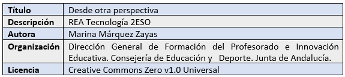

Este contenido fue creado con https://exelearning.net/, el editor libre y de fuente abierta diseñado para crear recursos educativos.
SDA - DESDE OTRA PERSPECTIVA

Este contenido fue creado con https://exelearning.net/, el editor libre y de fuente abierta diseñado para crear recursos educativos.